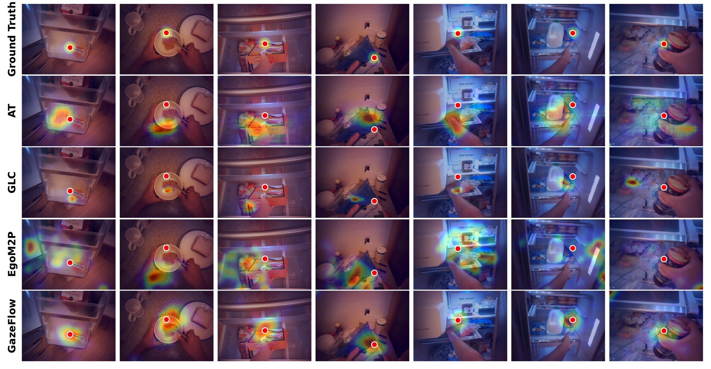
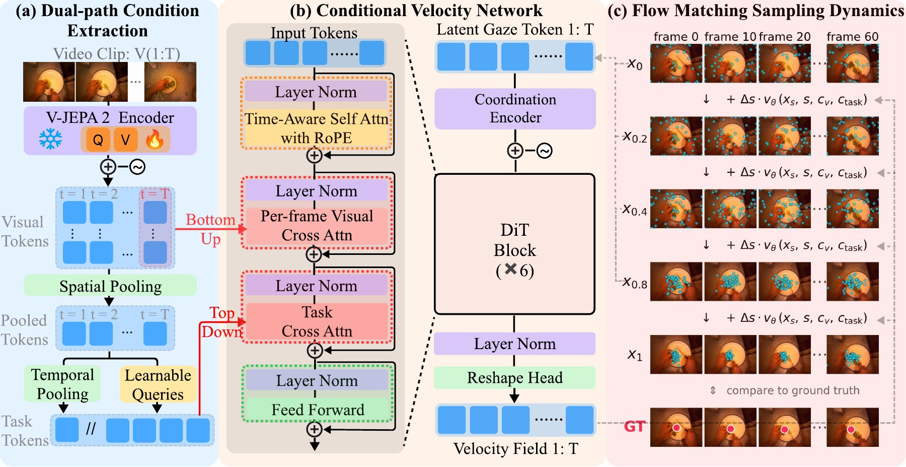

Egocentric gaze prediction enables many downstream applications but remains challenging, as human gaze is inherently stochastic. This stochasticity is constrained by structured temporal dynamics alternating between fixations and saccades, top-down influences from tasks, and bottom-up visual saliency.
Based on this observation, we introduce GazeFlow, a framework that directly models gaze as a joint distribution of temporal gaze positions conditioned upon both top-down and bottom-up information. In particular, GazeFlow uses conditional flow matching (CFM): a learned velocity field iteratively transports a Gaussian noise sample into a plausible gaze trajectory drawn from this joint distribution. The velocity field is conditioned on bottom-up visual features extracted by a video encoder and on top-down task information obtained by globally querying these features.
On standard datasets, GazeFlow achieves state-of-the-art performance on per-frame metrics, and the generated trajectories align better with human gaze temporal dynamics.
Pick a video and press Generate. GazeFlow draws K gaze trajectories for the entire video, each a sample from the learned distribution, with S Euler steps per sample.
Loading clips…
Red marks where the human is most likely to look.
F1 on EGTEA Gaze+, with the time per 64-frame clip under it. We recommend K between 10 and 30 with S=5, and K=30, S=5 is our recommended setting.
Speed is the time to predict gaze for one frame on the same H100. Accuracy is F1 on EGTEA Gaze+. The GazeFlow bars follow the selected K and S.
Video and ground truth. Each clip is a head-mounted video from EGTEA Gaze+, recorded while a human performs a cooking task. Its ground-truth gaze trajectory is recorded jointly by an eye tracker and is shown as the red dot.
Generated samples. Gaze is inherently stochastic. Even for the same observer viewing the same scene, trajectories are not exactly reproducible. So the ground-truth trajectory is one sample from a distribution conditioned on the video, and GazeFlow learns to approximate this distribution. Each small cyan dot is one generated trajectory at the current frame. The heatmap shows where the K samples concentrate, from blue (few samples) to red (most samples).
K, the number of samples. Each sample starts from a different Gaussian noise. More samples cover the distribution better but cost more time. For each S, we draw 50 samples, and a smaller K shows the first K of them.
S, the number of Euler steps. A sample is transported from Gaussian noise to a clean trajectory by integrating the velocity field. We evaluate this integral with S Euler steps, each of which evaluates the velocity network once. Flow matching needs few steps: accuracy saturates at S=5.
Inference time. All times are measured on a single NVIDIA H100 for a 64-frame clip, which lasts about 2.7 s at 24 fps. The video encoder runs once per clip and is included.

Gaze patterns are difficult to predict because of their stochasticity: even for the same observer viewing the same scene, trajectories are not exactly reproducible. This stochasticity is not purely random. It is jointly constrained by three factors. First, gaze trajectories exhibit structured dynamics that alternate between saccades and fixations. Second, gaze is task-dependent, and information about the task is often revealed in future frames. Third, gaze is influenced by stimulus-driven factors such as visual saliency.
Taken together, we model gaze as a joint distribution of temporal gaze positions conditioned upon the entire video. GazeFlow learns this distribution with conditional flow matching. A video encoder extracts bottom-up visual tokens. A task-token bank, obtained by globally querying these tokens, provides top-down task information. Both condition a velocity network that transports Gaussian noise to a gaze trajectory.

Per-frame gaze prediction on EGTEA Gaze+ and Ego4D. GazeFlow achieves state-of-the-art performance on both datasets. AAE is the average angular error in degrees (lower is better). For all other metrics, higher is better.
| Method | EGTEA Gaze+ | Ego4D | ||||||||
|---|---|---|---|---|---|---|---|---|---|---|
| AUC | F1 | P | R | AAE° | AUC | F1 | P | R | AAE° | |
| Center bias | 0.906 | 0.185 | 0.162 | 0.215 | 16.07 | 0.930 | 0.222 | 0.194 | 0.258 | 13.92 |
| GLC | 0.953 | 0.421 | 0.348 | 0.531 | 10.21 | 0.947 | 0.355 | 0.267 | 0.530 | 11.52 |
| EgoM2P (LoRA) | 0.921 | 0.293 | 0.205 | 0.515 | 12.81 | 0.930 | 0.297 | 0.217 | 0.470 | 12.69 |
| AT | 0.956 | 0.419 | 0.339 | 0.547 | 9.88 | 0.954 | 0.346 | 0.268 | 0.487 | 12.01 |
| GazeFlow (ours) | 0.964 | 0.491 | 0.414 | 0.603 | 9.01 | 0.958 | 0.392 | 0.307 | 0.540 | 10.46 |
@inproceedings{zhao2026gazeflow,
title = {GazeFlow: From Human Gaze Behavior to Generative Egocentric Gaze Prediction},
author = {Zhao, Sheng and Lin, Weikai and Zhu, Yuhao},
booktitle = {Advances in Neural Information Processing Systems (NeurIPS)},
year = {2026}
}